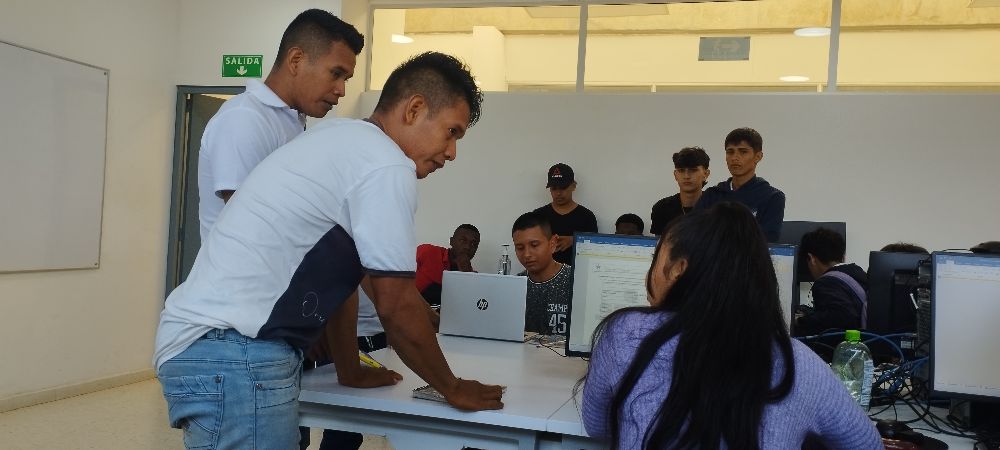
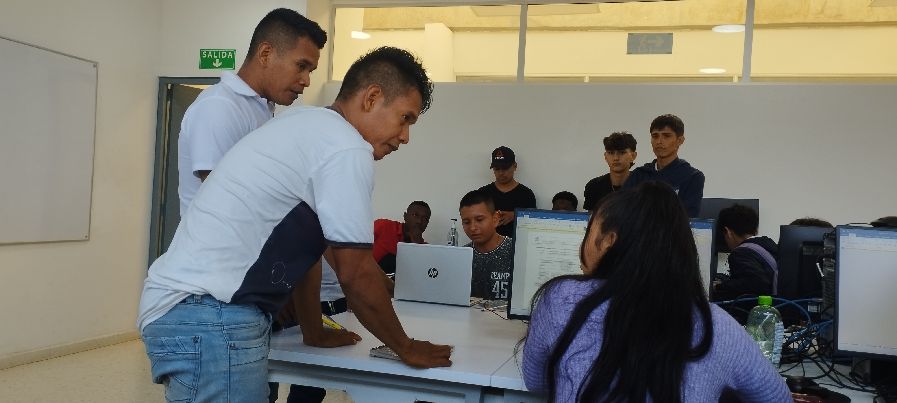

Nuestra inducción es una parte fundamental para el
del aprendizaje de nosotros los aprendices,
como tal
nos ayuda a ubicarnos en los temas más importantes que debemos saber
de la institución
y así mismo tener una buena formación profesional e integral.
esta inducción tiene una duración de 2 semanas aproximadamente,
donde conocemos a cada uno de nuestros instructores, nuestros directores,
nuestros lideres y cada área del centro formativo.
 
